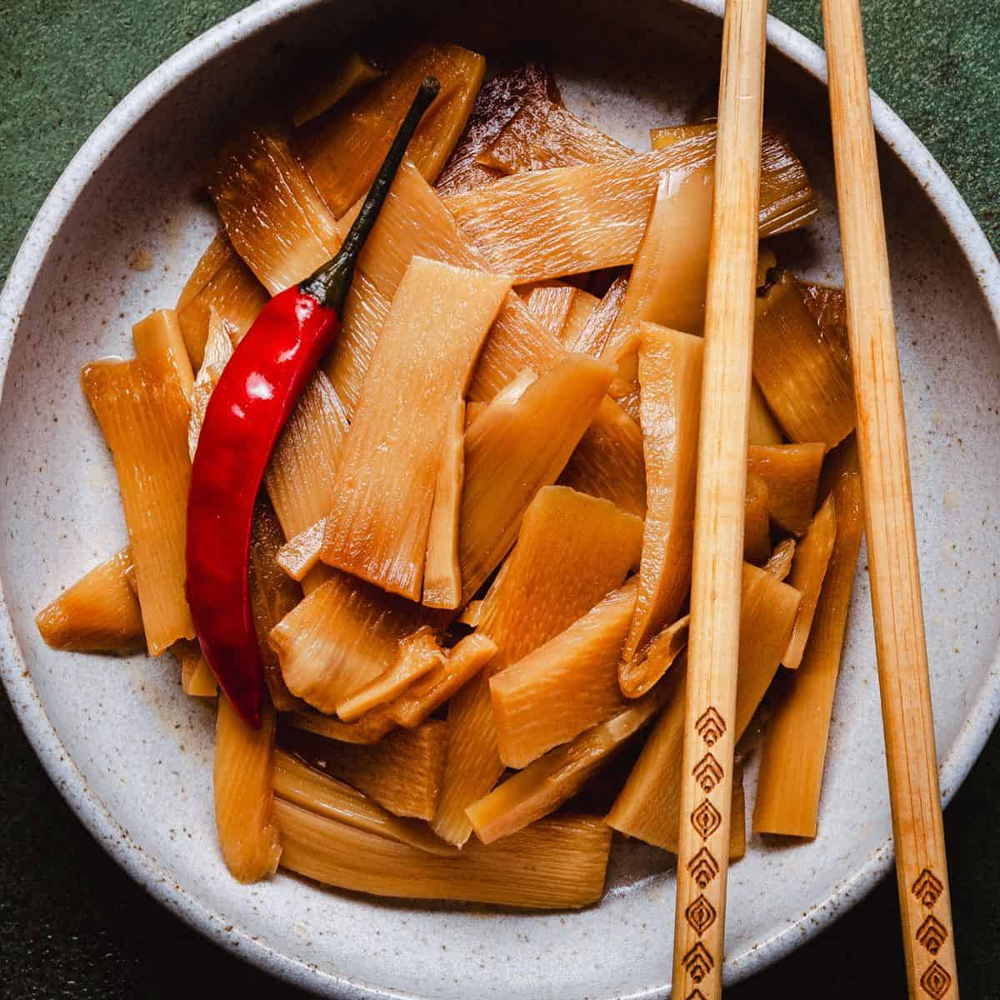

Menma Ramen
「メンマラーメン — The flavor of fermented bamboo that brings soul and character.」
Menma Ramen stands out for the use of menma, fermented bamboo shoots that add a deep and slightly sweet flavor. It is a balanced ramen that highlights umami.
Ingredients
- Shoyu or miso broth
- Fermented bamboo shoots (menma)
- Medium noodles
- Chashu pork, green onion and nori
Flavor
Gentle umami with sweet and earthy notes.
Aroma
Fresh, vegetal and slightly smoky.
Texture
Light and balanced, with contrast between the smooth broth and the firm bamboo.